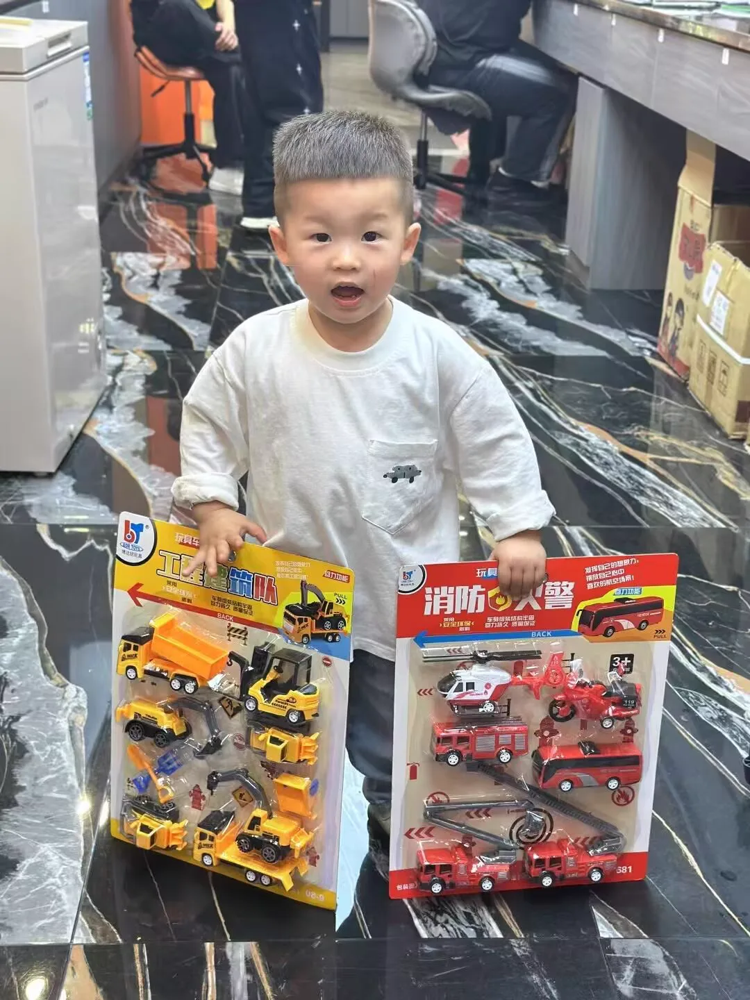
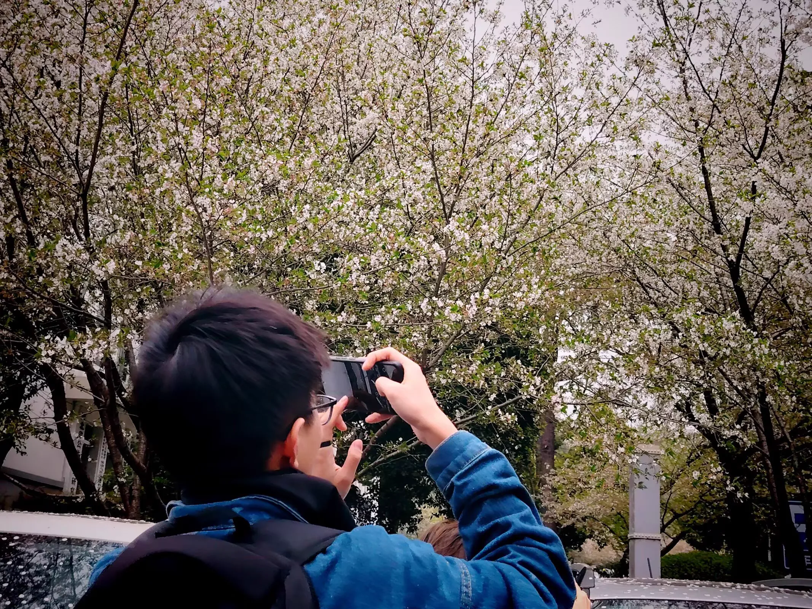
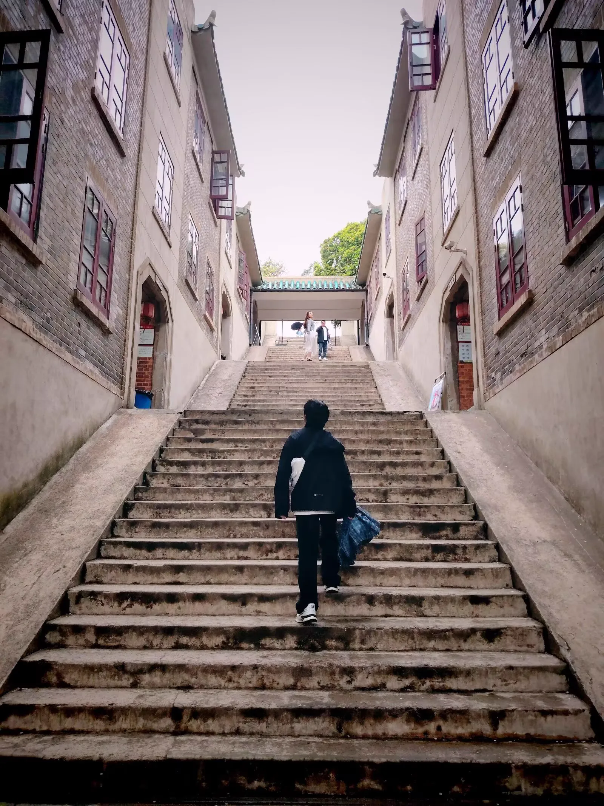
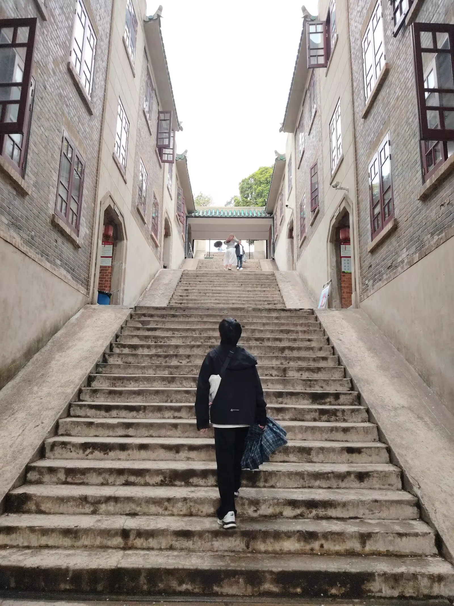
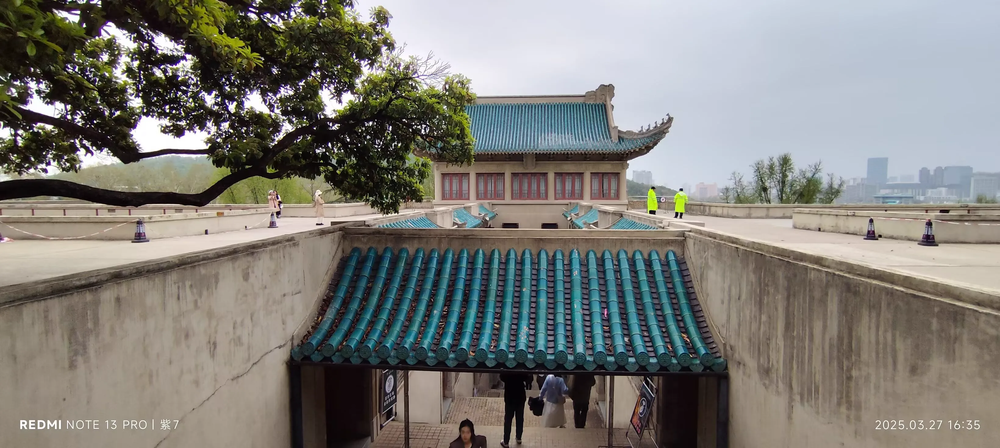
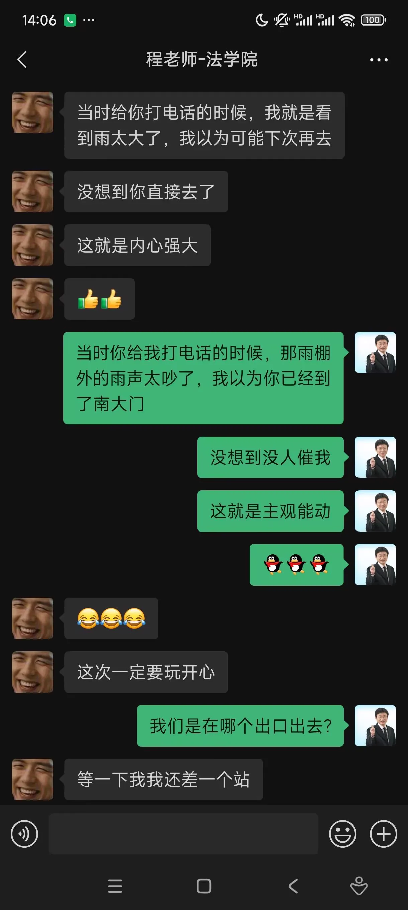

Journal · 2025-03-28
定位华中科技大学南大门，街道口地铁站，武汉大学南二门，武汉大学文学院，华中科技大学紫菘学生公寓8 栋前台、5栋532
话说三月份的一个晚上，天寒地冻，星月无光。布莱恩和龟粪正在看《恶搞之家》，柴小桑正在整理白天逛珞珈山时拍的风景照。
法学院的周末，课有点满；相对而言，公管学者的时间，还是比较充裕的。周四下午阴雨连绵，非常适合携友同游！
考虑到班团会有点枯燥，某个小年轻直接淋雨骑车，到南大门，坐地铁去珞珈山。但班长估计不会支持他……临时从开会现场逃跑。
年少的疯狂，即使是暮年回想，依然悸动！天哪，男人至死是少年！何妨吟啸且徐行？哈哈！
时光轴记录
编辑于2025年3月28日 15:24
又是一个风和月丽的凌晨，在紫菘公寓的一张书桌前，小槑正找 AI 们算账。在骂完“豆包”和“DeepSeek”后，他迟迟等不到“HUST AI”的回应……
是时候上床睡觉了，但小槑还是愤愤不平：“华小智，等我连上了校园网，我再骂你！你酸萝卜别吃！”
有生之年，华科校内，一位本科生被一群 AI 忽悠！奇耻大辱！
漆同桌 : DS是真的深度思考
2025年3月25日 10:48




编辑于2025年3月28日 15:23
又是一个风和日丽的上午，小槑磕磕碰碰，参考原始材料，总算校正了党政推文中的 AI 内容。
是时候骂一顿“HUST AI”了。令人诧异的是，在华小科的 AI 大模型中，学校比较和排名竟是“敏感话题”？！
时针拨回到36小时之前，他还天真地认为，AI 写推文，输出的内容，估计有 70% 是已加工的基本事实，剩下的 30% 估计是凭空生成的。而自己作为人类，只需要写好推文中 30％ 的内容，真是太轻松了
但现实并非如此，AI 写推文，输出的内容，只有 30% 的基本事实，还有 40% 是从其他材料中加工来的，剩下的 30% ，都是 AI 瞎编的！
而且讽刺的是，那 40％ 的“搬运加工”内容来源，都是小槑提供给 AI 的推文素材。
这也确实匪夷所思，在喻家山的党建推文中，时间、地点、人物都对头，竟然还会出现珞珈山、南湖的活动内容！而且，小槑还真就“信以为真”，最后还是部长提醒了他
此事已成前车之鉴，下次再也不敢请 AI 写党政推文了！


2025年3月28日 14:34
话说三月份的一个晚上，天寒地冻，星月无光。布莱恩和龟粪正在看《恶搞之家》，柴小桑正在整理白天逛珞珈山时拍的风景照。
法学院的周末，课有点满；相对而言，公管学者的时间，还是比较充裕的。周四下午阴雨连绵，非常适合携友同游！
考虑到班团会有点枯燥，某个小年轻直接淋雨骑车，到南大门，坐地铁去珞珈山。但班长估计不会支持他……临时从开会现场逃跑。
年少的疯狂，即使是暮年回想，依然悸动！天哪，男人至死是少年！何妨吟啸且徐行？哈哈！
柴江赣北 : 图1，还是那个湖口后生，我拿来凑九宫格的！
2025年3月28日 14:43
柴江赣北 : 图2至图4，是程老师拍的，非常惊艳！
2025年3月28日 14:43
程老师 : 何妨吟啸且徐行！太赞了
2025年3月28日 16:10
^0^ 回复程老师 : 程老师，我刚搞了个小号！
2025年4月29日 19:25
小瞎子 回复程老师 : 程老师，我刚把自己注销了，因为我用小号做了见不得人的实验。能再加一下吗？
Edited on Mar 28, 2025 15:24
On yet another fine early morning, at a desk in Zisong Apartments, Xiaomei was settling accounts with the AIs. After scolding “Doubao” and “DeepSeek,” he waited and waited for a reply from “HUST AI” that never came...
It was time to go to bed, but Xiaomei was still fuming: “Huaxiaozhi, once I connect to the campus network, I'll scold you again! Don't you dare eat the sour radish!”
In all one's born days, on the HUST campus, an undergraduate was bamboozled by a bunch of AIs! What a disgrace!
漆同桌 : DS really does deep thinking
Mar 25, 2025 10:48
Edited on Mar 28, 2025 15:23
On another fine morning, Xiaomei stumbled along and, consulting the original materials, finally corrected the AI-generated content in the Party-government promotional post.
It was time to give “HUST AI” a good scolding. To his surprise, in Huaxiaoke's large AI model, school comparisons and rankings turned out to be a “sensitive topic”?!
Wind the clock back 36 hours, and he still naively believed that when AI wrote a post, about 70% of its output was processed basic facts, with the remaining 30% fabricated out of thin air. As a human, he only needed to write 30% of the post's content — how easy!
But reality was not so: in the AI-written post, only 30% was basic fact, another 40% was processed from other materials, and the remaining 30% was pure AI fabrication!
And ironically, the source of that 40% of “rehashed” content was all the post material Xiaomei had himself supplied to the AI.
It was truly baffling: in the Party-building post about Yujiashan, though the time, place and people all matched, content about Luojia Mountain and Nanhu Lake somehow appeared! And Xiaomei really did “take it as true” — it was the department head who finally tipped him off.
This has become a lesson learned — never again will I dare ask an AI to write a Party-government post!
Mar 28, 2025 14:34
Now, on a certain night in March, it was bitterly cold, with neither starlight nor moonlight. Bryan and Guifen were watching “Family Guy,” while Chai Xiaosang was sorting the landscape photos he had taken that day while strolling around Luojia Mountain.
For law school students, weekends were a bit packed; by contrast, public administration scholars had more time to spare. Thursday afternoon brought continuous rain — perfect for going on an outing with friends!
Considering the class league meeting would be a bit dull, a certain young fellow simply rode his bike in the rain to the South Gate, then took the subway to Luojia Mountain. But the class monitor probably wouldn't approve of him... sneaking away from the meeting on the spot.
The follies of youth still make the heart race even when recalled in old age! Good heavens — a man is a boy until death! Why not chant and stroll along at leisure? Haha!
柴江赣北 : Photo 1, still that Hukou lad — I used it to fill out the nine-grid!
Mar 28, 2025 14:43
柴江赣北 : Photos 2 to 4 were taken by Teacher Cheng — absolutely stunning!
Mar 28, 2025 14:43
程老师 : Why not chant and stroll along at leisure! That's brilliant
Mar 28, 2025 16:10
^0^ 回复程老师 : Teacher Cheng, I just made a side account!
Apr 29, 2025 19:25
小瞎子 回复程老师 : Teacher Cheng, I just deactivated myself, because I used my alt account for an experiment I can't show anyone. Could you add me again?
Modifié le 28 mars 2025 à 15:24
Encore une fin de nuit au ciel clément, devant un bureau de la résidence Zisong, Xiaomei réglait ses comptes avec les IA. Après avoir engueulé « Doubao » et « DeepSeek », il attendait en vain une réponse de « HUST AI »...
Il était temps d'aller dormir, mais Xiaomei fulminait encore : « Huaxiaozhi, dès que je serai connecté au réseau du campus, je te resservirai ! N'avale pas ce radis aigre ! »
En cette vie, sur le campus de HUST, un étudiant de licence s'est fait embobiner par une bande d'IA ! Quelle humiliation !
漆同桌 : DS réfléchit vraiment en profondeur
25 mars 2025 10:48
Modifié le 28 mars 2025 à 15:23
Encore une belle matinée, Xiaomei, non sans peine et en s'appuyant sur les documents originaux, finit par corriger le contenu généré par IA dans la publication du Parti et du gouvernement.
Il était temps de bien engueuler « HUST AI ». Étonnamment, dans le grand modèle d'IA de Huaxiaoke, comparer les universités et leurs classements était un « sujet sensible » ?!
Remontons l'horloge de 36 heures : il croyait encore naïvement que, lorsque l'IA rédigeait un article, environ 70 % du contenu était des faits de base déjà traités, et les 30 % restants inventés de toutes pièces. En tant qu'humain, il n'aurait qu'à rédiger 30 % du contenu — quel soulagement !
Mais la réalité est tout autre : dans l'article rédigé par l'IA, seuls 30 % étaient des faits de base, 40 % étaient retraités d'autres documents, et les 30 % restants étaient purement inventés par l'IA !
Et, ironie du sort, la source de ces 40 % de contenu « recyclé » n'était autre que les documents que Xiaomei avait lui-même fournis à l'IA.
C'était proprement ahurissant : dans l'article sur la construction du Parti à Yujiashan, alors que l'heure, le lieu et les personnes correspondaient, on voyait surgir des activités de la montagne Luojia et du lac Nanhu ! Et Xiaomei y avait vraiment « cru », jusqu'à ce que le chef de service finisse par le prévenir.
L'affaire est devenue une leçon : plus jamais je n'oserai demander à une IA de rédiger un article du Parti et du gouvernement !
28 mars 2025 14:34
En ce soir de mars, il faisait un froid glacial, sans étoile ni lune. Bryan et Guifen regardaient « Les Griffin », tandis que Chai Xiaosang triait les photos de paysage prises le jour même lors de sa balade à la montagne Luojia.
Pour les étudiants de la faculté de droit, le week-end était plutôt chargé ; en comparaison, les spécialistes de l'administration publique disposaient de plus de temps. Jeudi après-midi, la pluie tombait sans discontinuer — parfait pour une sortie entre amis !
Jugeant la réunion de classe un peu ennuyeuse, un certain jeune homme partit simplement à vélo sous la pluie jusqu'à la porte Sud, puis prit le métro jusqu'à la montagne Luojia. Mais le chef de classe n'approuverait sans doute pas qu'il... se soit esquivé de la réunion en plein milieu.
Les folies de la jeunesse font encore battre le cœur quand on les évoque au soir de sa vie ! Mon Dieu, un homme reste un adolescent jusqu'à la mort ! Pourquoi ne pas chanter et marcher lentement ? Ha ha !
柴江赣北 : Photo 1, toujours ce jeune homme de Hukou, je m'en sers pour compléter la grille de neuf !
28 mars 2025 14:43
柴江赣北 : Les photos 2 à 4 sont l'œuvre du professeur Cheng, elles sont superbes !
28 mars 2025 14:43
程老师 : Pourquoi ne pas chanter et marcher lentement ! C'est génial
28 mars 2025 16:10
^0^ 回复程老师 : Professeur Cheng, je viens de me créer un petit compte secondaire !
29 avr. 2025 19:25
小瞎子 回复程老师 : Professeur Cheng, je viens de me désinscrire, car j'ai mené une expérience inavouable avec mon compte secondaire. Pourriez-vous me rajouter ?
Bearbeitet am 28.03.2025 um 15:24
An einem weiteren klaren frühen Morgen saß Xiaomei an einem Schreibtisch im Zisong-Wohnheim und rechnete mit den KIs ab. Nachdem er »Doubao« und »DeepSeek« beschimpft hatte, wartete er vergeblich auf eine Antwort von »HUST AI«...
Es war Zeit, ins Bett zu gehen, doch Xiaomei grollte noch immer: »Huaxiaozhi, sobald ich mit dem Campusnetz verbunden bin, schimpfe ich weiter mit dir! Iss ja nicht den sauren Rettich!«
Zu Lebzeiten wurde auf dem HUST-Campus ein Bachelor-Student von einem Haufen KIs hereingelegt! Welch eine Schande!
漆同桌 : DS denkt wirklich tief nach
25.03.2025 10:48
Bearbeitet am 28.03.2025 um 15:23
An einem weiteren schönen Vormittag korrigierte Xiaomei mit Mühe und unter Rückgriff auf die Originalmaterialien schließlich den KI-generierten Inhalt im Partei- und Regierungsbeitrag.
Es war an der Zeit, »HUST AI« ordentlich die Leviten zu lesen. Erstaunlicherweise waren im großen KI-Modell von Huaxiaoke Schulvergleiche und Rankings ein »heikles Thema«?!
Dreht man die Uhr 36 Stunden zurück, glaubte er noch naiv, dass von dem, was eine KI beim Schreiben ausgibt, etwa 70 % verarbeitete Grundtatsachen und die restlichen 30 % frei erfunden seien. Als Mensch bräuchte er nur 30 % des Inhalts zu schreiben — wie entspannt!
Doch die Realität sah anders aus: In dem KI-geschriebenen Beitrag waren nur 30 % Grundtatsachen, 40 % aus anderen Materialien verarbeitet, und die restlichen 30 % hatte die KI schlicht erfunden!
Und ironischerweise stammten diese 40 % »recycelten« Inhalte ausschließlich aus dem Material, das Xiaomei selbst der KI geliefert hatte.
Das war wirklich unfassbar: Im Parteiaufbau-Beitrag über Yujiashan stimmten Zeit, Ort und Personen, und dennoch tauchten darin Aktivitäten vom Luojia-Berg und vom Nanhu-See auf! Und Xiaomei hielt es tatsächlich »für bare Münze«, bis ihn schließlich der Abteilungsleiter darauf hinwies.
Diese Sache ist mir zur Lehre geworden — nie wieder werde ich es wagen, eine KI einen Partei- und Regierungsbeitrag schreiben zu lassen!
28.03.2025 14:34
An einem Abend im März war es bitterkalt, ohne Sternen- oder Mondlicht. Bryan und Guifen schauten »Family Guy«, während Chai Xiaosang die Landschaftsfotos sortierte, die er tagsüber bei einem Spaziergang am Luojia-Berg aufgenommen hatte.
Für Jurastudenten war das Wochenende ziemlich voll; die Verwaltungswissenschaftler hatten dagegen reichlich Zeit. Am Donnerstagnachmittag regnete es ununterbrochen — ideal für einen Ausflug mit Freunden!
Da die Klassenversammlung etwas öde zu werden drohte, fuhr ein gewisser junger Mann einfach im Regen mit dem Rad zum Südtor und nahm dann die U-Bahn zum Luojia-Berg. Doch der Klassensprecher würde es wohl kaum gutheißen, dass er... mitten aus der Sitzung abhaute.
Die Torheiten der Jugend lassen das Herz noch im Alter höherschlagen! Mein Gott, ein Mann bleibt bis zum Tod ein Junge! Warum nicht singen und gemächlich dahinschlendern? Haha!
柴江赣北 : Foto 1, immer noch der Hukou-Bursche — ich habe es genutzt, um das Neuner-Raster zu füllen!
28.03.2025 14:43
柴江赣北 : Die Fotos 2 bis 4 stammen von Lehrer Cheng — einfach atemberaubend!
28.03.2025 14:43
程老师 : Warum nicht singen und gemächlich dahinschlendern! Das ist großartig
28.03.2025 16:10
^0^ 回复程老师 : Lehrer Cheng, ich habe mir gerade einen Zweitaccount angelegt!
29.04.2025 19:25
小瞎子 回复程老师 : Lehrer Cheng, ich habe mich gerade selbst abgemeldet, weil ich mit meinem Zweitaccount ein Experiment gemacht habe, das niemand sehen darf. Könntest du mich wieder hinzufügen?